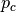
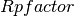
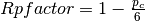
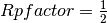
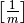
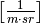
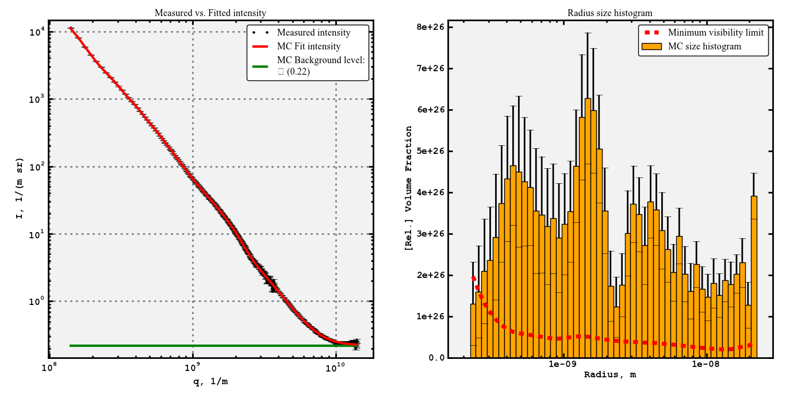
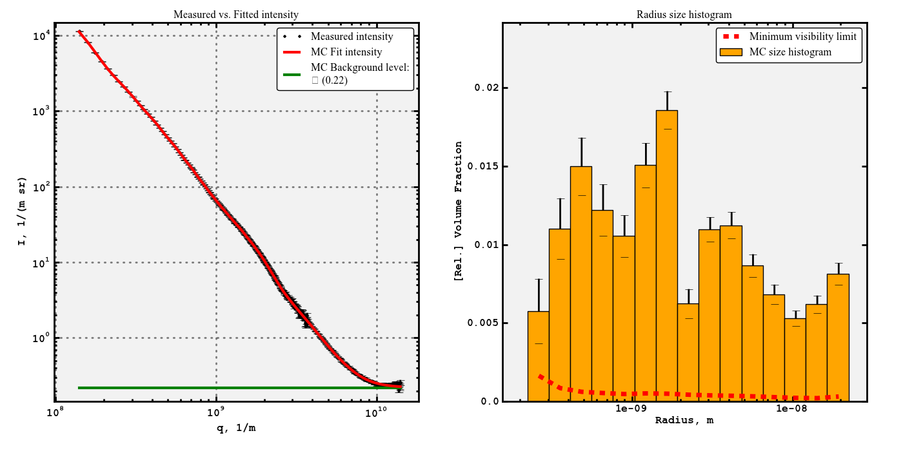
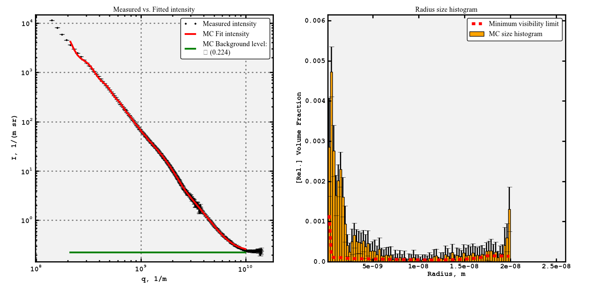

This guide is intended as an aid to getting the first fits using McSAS. For comprehensive details of what goes on under the hood, please refer as a baseline to the paper. Additionally, the code is open source, and provides the best “documentation” of what actually takes place.
When publishing results using this code, please be so kind as to cite the paper as:
Pauw, B. R., Pedersen, J. S., Tardif, S., Takata, M. and Iversen, B. B., J. Appl. Cryst. 46 (2013), in press
This document assumes a modicum of proficiency with the Python language, to a level sufficient for reading in a dataset.
A replacement of  by , where . Setting  will work in most cases.
The McSAS code at the moment can:
These aspects will be discussed in that order in this document.
Assuming you have a suitable Python prompt, such as provided by iPython from the Enthought Python Distribution, you can load the McSAS functions using:
execfile('McSAS.py')
A set of test data has been included in the directory, with concatenated data from two measurements (measured over different angular ranges). The sample is a porous organic material. The uncertainty has been estimated as outlined in the paper.
The dataset can be loaded using the pickle functions provided in McSAS:
QIE = pickle_load('test_data.pydat')
q = QIE[0,:]
I = QIE[1,:]
E = QIE[2,:]
It is assumed that a dataset has been loaded into Python, and that the 1D q-vector, accompanying 1D intensity and uncertainty (“error”, or standard deviation) is available as “q”, “I”, and “E”, respectively. For consistency throughout the calculation and its parameters, all length units are given in meters, which is particularly important if the measurement is done in absolute units, and retrieval of the actual volume fraction is required.
This implies that “q” must have the units of  and “I” and “E” must have the units of . Additionally, the optional size bounds are to be given in meters, and the scattering contrast, delta rho 2 squared, should be given in .
If, on the other hand, the intensity is in relative units, or if the size distribution can be in relative volume fraction, the units do not matter much. They should be consistent, but q can then be given in 1/nm, and the size bounds likewise in nm. The resulting distribution will then have the same units.
The most straightforward way of fitting is by running:
Result = Analyze_1D(q, I, E)
Which after a minute or so (or about five minutes for the provided extended dataset on an Intel i7 at 1.8 GHz (MacBook Air) will result in a dictionary called Result with all the fitting details in it.
The result can be visualised using the built-in plotting function, which puts the data, its fit and the resulting size distribution alongside one another. This can be automatically started by using the option Plot=True in the Analyze_1D code, but can also be run separately. To plot, simply type:
McPlot(q,I,E,Result)
Which should give you the plot shown in test_data.pdf:
The left-hand plot shows the data in black with error bars showing the uncertainty “E”, the MC fit in red, and a green line indicating the fitted background level. The width of the green line also serves to indicate the fitting limits in q, and the background value is furthermore indicated in the legend.
The right-hand plot shows the resulting volume-weighted size histogram, with uncertainties on the bars, and the red dashed line indicating the minimum level required for each bin to contribute a measurable amount (i.e. more than the uncertainty) to the scattering pattern.
As is clear from the vertical axis on that plot, the partial volume fractions are unrealistic if the scattering contrast has not been set. One may also want to rebin the plot in fewer bins to reduce the relative uncertainties on the bins.
These things can be achieved through rebinning of the result. The rebinning process takes similar arguments as Analyze_1D, and we can thus rebin and replot using (with empty line delimiting the for-loop):
B = observability3(q, I, E, Rrep = Result['Rrep'], Rpfactor = 0.5,
Histbins = 15, Histscale = 'log', drhosqr = 1.0e29)
#copy all content of the result of observability3 to the output matrix
for keyname in B.keys():
Result[keyname] = B[keyname]
McPlot(q, I, E, Result)
This should give the following figure (as shown in test_data_plot2.pdf):
This plot shows more reasonable values for the relative volume fraction, the total volume fraction can be calculated from the 100 repetitions using:
numpy.mean(Result['Vft'])
which should result in about 15%.
If you have a reasonable idea about what you want to do:
(there are more options but I am running out of ideas here:) Then you can do this in one step (with plotting) using:
Result = Analyze_1D(q, I, E, Convcrit = 5., Nreps = 25,
Bounds = [1e-10, 2e-8], qlims = [2e8, 1e10],
drhosqr = 5.0e29, Histbins = 80,
Histscale = 'lin', Nsph = 100, Plot = True)
Which returns a plot that looks a little wonky (given the low convergence criterion restrictions (the higher Convcrit, the more relaxed the criterion). But is otherwise perfectly valid (test_data_plot3.pdf):
At this point it may be a good idea to get the histogram data out of python and into another plotting program. You can export whatever information you want, but to get a useful set of four columns indicating left bin edge, bin width, bin value (height) and bin uncertainty (standard deviation), you can use:
McCSV('hist.csv', Result['Hx'], Result['Hwidth'], Result['Hmean'], Result['Hstd'])
Which writes just that to a file named hist.csv, semicolon delimited. It actually contains one more bin edge, which is the trailing edge and is superfluous.
If you have the ability and interest in improving the code, please consider joining the development effort, which will work on making the code object-oriented, including more shapes besides spheres, and adding slit-smearing options.
If you have more questions that are not answered in either 1) the paper, 2) the code, and 3) this document, feel free to send me an e-mail which you can find on the http://lookingatnothing.com/ weblog.
Good luck!
{kind=link}
{kind=link}
{kind=link}